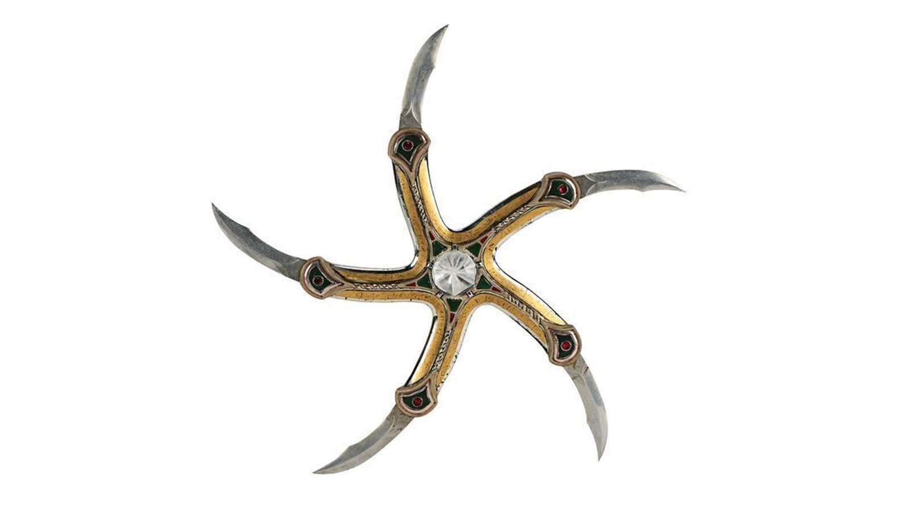

Fantasy & superhero/Krull (1983)/The Glaive

▦ 4 photos · ▶ 2 videosWeapon / Fantasy
The
Glaive
Colwyn’s five-bladed throwing star in Krull (1983).
First seenKrull, 1983
Films1
BladesFive, spring-out
PropBrass, painted gold
Key sceneColwyn climbs into a mountain cave and pulls the Glaive from molten rock.